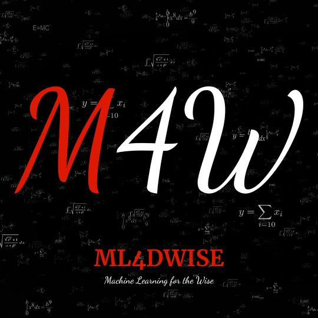

Machine Learning For The Wise - ML4DWISE

This course is designed for those who desire to seize the opportunity of building intelligent machines – a pursuit reserved for the wise. The digital age is undeniably entering an era dominated by artificial intelligence (AI). To achieve this level of intelligence, machines must be taught, or trained. This is where machine learning (ML) comes in. It empowers computers to learn from data without explicit programming, enabling them to identify patterns and make predictions based on the information provided.
Everyone’s unique knowledge, experience, and expertise are invaluable in developing these intelligent machines. For instance, the input of a doctor is crucial for creating an AI that can detect early stages of cancer. AI is poised to revolutionize every field, alleviating drudgery and boosting productivity, ultimately redefining the nature of work.
While there’s speculation about AI taking jobs, the reality is stark: 100% of jobs will be impacted. However, there’s good news for two groups: those who leverage AI to enhance their productivity and those who build it. This course empowers you to both harness the power of AI and contribute to its development.
Here’s the course curriculum, designed to equip the wise with the necessary skills to build intelligent machines. It progresses from problem solving with Python, to super-charged productivity by leveraging AI, and then to building intelligent machines with ML, culminating in a practical capstone project.
Curriculum
- PROBLEM SOLVING WITH PYTHON
- Goal: Develop proficiency in Python and foundational programming concepts essential for Machine Learning.
- 1.1 Introduction To Python
- Understanding Python’s popularity in AI/ML.
- Setting up the development environment (Anaconda, Jupyter Notebooks).
- Python basics: variables, data types, input/output, debugging.
- 1.2 Data and Data Structures
- Data: numbers, strings, boolean.
- Data structures: lists, tuples, sets, dictionaries.
- 1.3 Loops and Logic
- Loops: iterations, for-loop, while-loop.
- Conditionals: if, else, elif.
- 1.4 Formal Coding
- Functions.
- Classes.
- Libraries in Python.
- 1.5 Working With Data
- Data collection and input methods.
- Data manipulation with Pandas.
- Data visualization using Matplotlib.
- Practical: Analyze and visualize a real-world dataset (e.g., COVID-19 trends).
- 1.1 Introduction To Python
- ACCELERATED SOLUTIONS WITH AI
- Goal: Explore AI tools and techniques to accelerate problem-solving and creativity.
- 2.1 Artificial Intelligence Introduction
- Basics of AI: what it is, types, and real-world use cases.
- AI tools: ChatGPT, NotebookLM, Meta AI, Perplexity, Runway.
- 2.2 Prompt Engineering
- Crafting effective prompts for generative AI.
- Techniques for optimizing output for text, images, and audio.
- 2.3 Working with Text
- Generating articles, emails, and reports.
- Summarization and language translation using AI.
- 2.4 Working with Images
- Text-to-image generation (e.g., DALL-E, Stable Diffusion).
- Editing and enhancing images using AI tools.
- 2.5 Working with Audio
- AI for voice synthesis and speech-to-text.
- Basics of music generation with AI.
- Practical: Generate promotional content (text, image, audio) for a mock brand.
- 2.1 Artificial Intelligence Introduction
- BUILDING INTELLIGENCE SYSTEMS WITH ML
- Goal: Gain deep expertise in Machine Learning to create intelligent systems for diverse applications.
- 3.1 Machine Learning Introduction
- Key concepts: supervised, unsupervised, reinforcement learning.
- ML tools: Hugging Face, Jupyter Notebook, Transformers.
- 3.2 Text ML (Natural Language Processing)
- Text preprocessing: tokenization, stemming, lemmatization.
- Text classification and sentiment analysis.
- Building chatbots with transformer models.
- 3.3 Image ML
- Image preprocessing and augmentation.
- Convolutional Neural Networks (CNNs).
- Object detection and segmentation.
- 3.4 Audio ML
- Preprocessing audio signals.
- Speech recognition and classification.
- Audio synthesis and generation.
- Practical: Create a sentiment analyzer using Hugging Face. CAPSTONE PROJECT:
- 3.1 Machine Learning Introduction
- Goal: Combine the skills learned across all modules to solve a real-world problem.
- Project: Build an intelligent virtual assistant.